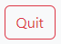

How To Play!
How the game is played
- Enter the players name on the Main Page
- Click the button
- For each round click the button
- After the last round is played the button with change to a
button
- Cant click the button
to play again or you can click the  button
in the upper right corner of the Nav Bar to leave the game.
Rules
The Game consist of 26 rounds. For each round the player with the highest face value will win.
Aces are the hightest value card. If there is a tie, the game moves to the next round. Goal is
to win the most rounds. Good Luck.
{% endblock %}